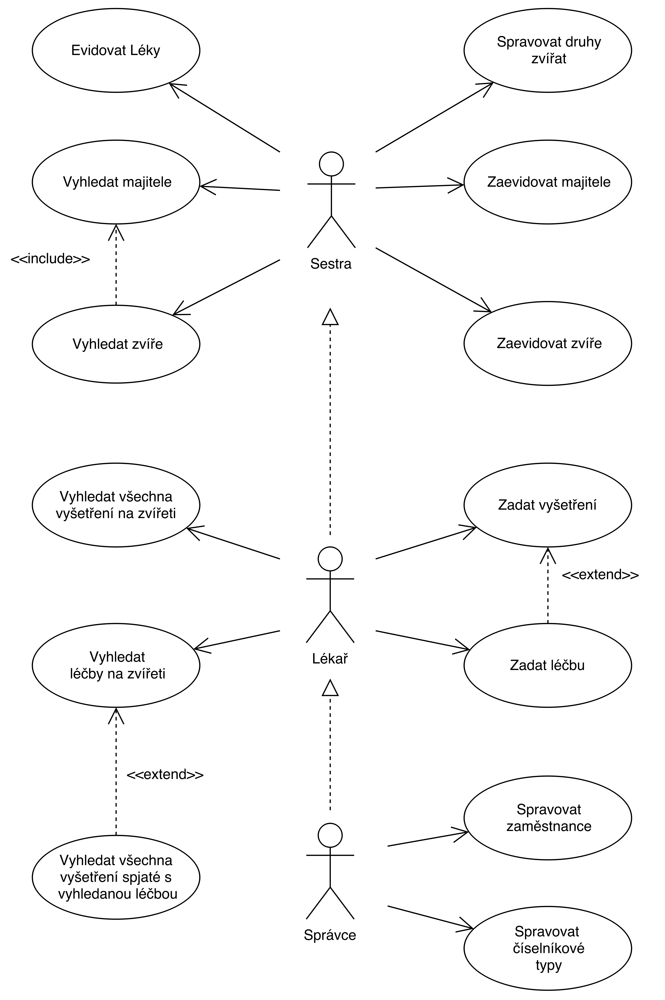

| Login | Heslo | Role |
|---|---|---|
| admin | admin | Administrátor |
| Jaromir | DoctorWHO | Doktor |
| Petr | 123456 | Sestra |
use-case
PHP skripty, které implementují jednotlivé případy použití uvedené v use-case diagramu, jsou ve složce viewModels.
Změny: use-case jsme prodiskutovali a rozhodli jsme se, že sestra bude moct vykonávat stejné akce jako doktor.
->Důvod je ten, že pro některé doktory bude příjemnější vykonávat prohlídku a nechat sestrumezitím zadávat a vyhledávat informace.
->Správce může spravovat číselníkové typy na úrovni aplikace.
Nestihli jsme doimplementovat vytváření a editaci léčeb na vyšetření.
Na úrovni aplikace nejdou přidávat druhy zvířat, to může a nemusí být problém podle pohledu (třeba že budou předimplementované), nicméně je důležité toto uvést.